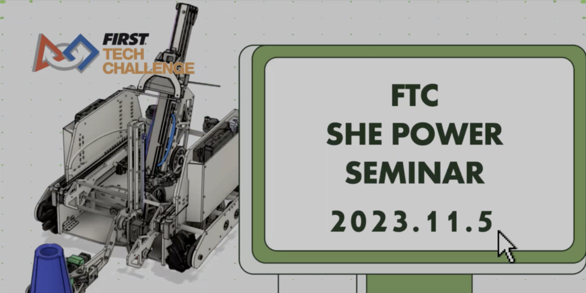
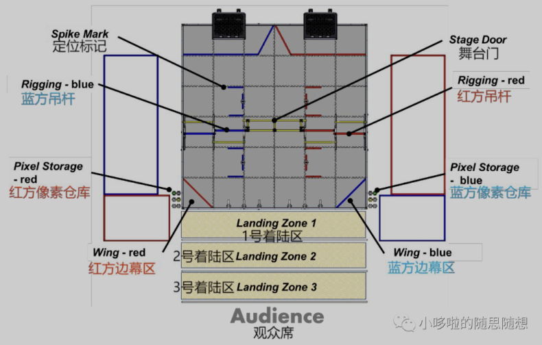
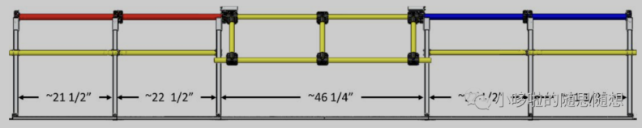
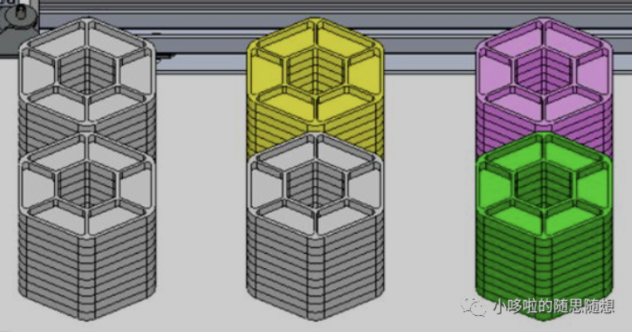
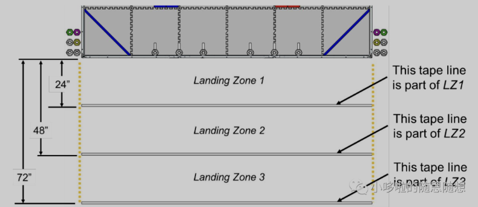
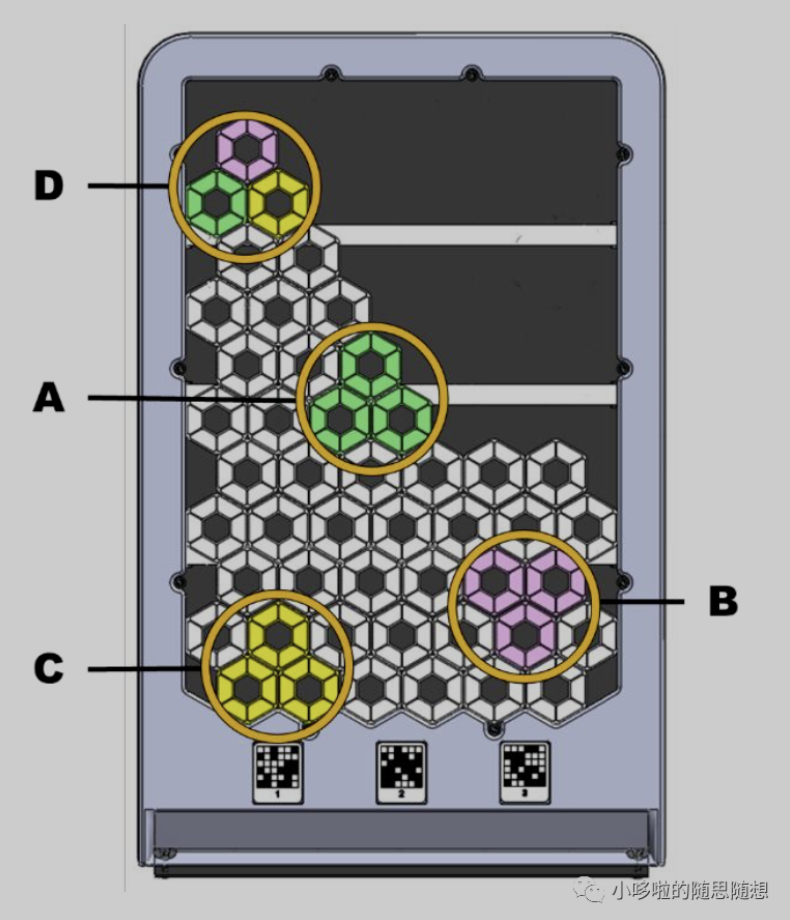
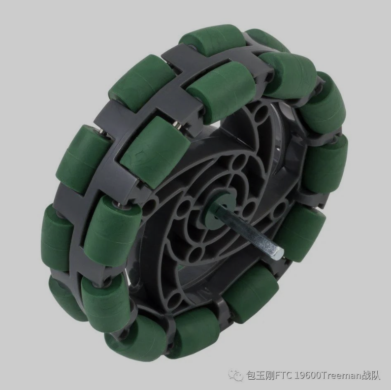
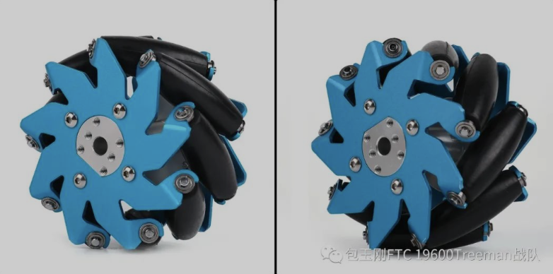
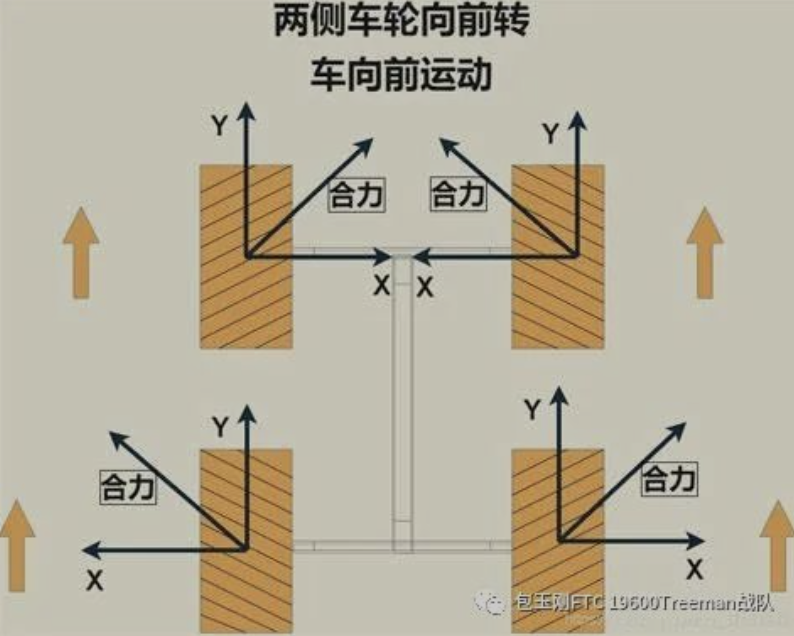

TREEMAN 19600 Posts/Newsletters

Posts of Team TREEMAN
Publish Date: 2023/11/11

Last Sunday, we successfully held the FTC SHE POWER online event. This is an event designed to celebrate and explore the roles and experiences of women in the fields of science, technology, engineering, and mathematics (STEM).
It attracted enthusiastic participants from a total of 14 teams, in order of 19600, 22406, 19606, 19605, 21959, 24068, 14179, 15534, 19675, 21852, 24255, 19641, 23687, 19660.
The speakers truthfully and inspirationally shared their experiences in the STEM field, including the biases they saw and the process of overcoming difficulties and biases. These sincere sharing not only inspired everyone present, but also strengthened our original intention of organizing such events: to make more voices heard in the STEM field.

What is particularly touching is that some speakers who were unable to attend in person chose to participate by recording videos, reflecting their passion for the STEM field and commitment to the event. This approach demonstrates how technology can help people overcome obstacles and bring together voices from all over the world with diverse personalities. These videos not only enrich the content of the event, but also add special significance and warmth to the event.
Some participants shared their initial interest in STEM, and these stories added a touch of light to the event, making the atmosphere more relaxed and enjoyable.
With the successful conclusion of FTC SHE POWER, we are full of hope for the future. This event proves that when we work together, we can create a more diverse, equal, and inclusive STEM environment. We look forward to hosting similar events again in the near future to continue supporting and celebrating women's outstanding contributions in the STEM field.
We express our deep gratitude to all the speakers, volunteers, and participants for their efforts and enthusiasm, which made this event a true success.
Scan the QR code below, join our community, and continue to write exciting stories in the STEM field together!

View the Original Newsletter(Chinese)
Publish Date: 2023/10/29
We are honored to announce that we will hold a unique online event next Sunday——
This event will become a platform for female team members to cross national borders, share and learn from each other. Through this event, we hope to encourage more women to enter the STEM (Science, Technology, Engineering, and Mathematics) field, showcasing their unique charm and unlimited possibilities in the field of technology.
Our sharers will share the details of their participation, including the hard work during the preparation process, the intense excitement at the competition site, and their reflections and gains after the competition. At the same time, they will also share their views and reflections on STEM education and future technological trends.
Publish Date: 2023/10/24
The FTC China division will start around December 2023, and in order to achieve good results, it is definitely necessary to have a good understanding of the competition system.
The theme and rules of the 23-24 season 'Central Stage' were announced as early as 0am Beijing time on 9/10. The discussion on the season plan has certainly started early, but there is still no time to promote it well.
So, see the competition system below for this year!


This is the layout of this competition.
This competition is divided into two stages: fully automatic stage and manual stage. The four teams will be divided into two groups and cooperate against each other. The goal is to achieve the highest possible score in both stages of the competition.
Both stages will be conducted on a 12 foot * 12 foot sponge mat with a 1-foot high edge.
The volume of the robot is limited to a shape of 18 feet by 18 feet by 18 feet, and it can be extended in the future.
The venue is generally divided into two teams: the blue team and the red team; The only way to break this rule is for the 'human player station' on the 'own' side to be on the 'other' side.
On the side away from the audience, there are two "background boards" with a slope of 60°.

The background board is almost directly related to all scoring methods, which will be introduced later. Note here that there are three fixed "QR codes" at the bottom of the background board, which are used to assist in indicating "left", "center", and "right" during the automatic phase.
In the middle of the field, there is a "truss" that restricts movement.

The side trusses are staggered and immovable, with a height of 14 feet above the ground.
There is a stage gate structure in the middle, with a minimum height of 12 feet, but it can only be extended from the audience seat towards the back court, with a height of up to 22 feet.

Before the competition starts, the white pixels in the above image will be divided into 5 stacks, totaling 6 stacks, placed on the side of the venue near the audience.
The remaining pixels will be input into the corresponding "side screen area" by human players during the control phase in the corresponding "human player area".
The robot can pre install a yellow, a purple pixel, and a paper airplane.
The scores in this competition will revolve around "pixels", and the majority of the scores obtained are related to these hexagonal blocks.
Next, I will introduce the scoring opportunities in the two stages of "automatic" and "manual".
---
- Automatic Phase: The first 30 seconds of the competition are the Autonomous Period, which only automatically operates the robot through pre programmed programs and sensor inputs
- Control phase: After the automatic phase ends, there is a 2-minute Driver Controlled Period
- Final stage: The final stage also belongs to the operational stage, starting from the last 30 seconds of the competition. 
Score Point 1: Randomization Object

After the robot recognizes the Randomization Object placed on the randomly selected Spike Mark, the alliance can score in the following ways:
a. Place 1 purple pixel on the randomly selected positioning marker.
b. Place 1 yellow pixel on the alliance background board corresponding to the randomly selected positioning marker.
When a team uses team props instead of the white pixels provided in the competition as random allocation objects to complete these tasks, they can earn additional points.
Completing any of these items will result in a score of 10/20 based on whether or not you have used your own props.
Due to the presence of 'randomness', it is necessary to prepare multiple schemes separately and use machine vision or image analysis to automatically select which scheme to enable. High technical skills are required.
Score Point 2: Pixel placement - the robot places pixels on the backdrop of the alliance or in the background of the alliance
Whenever there is a pixel on the background board during the automatic phase, the team will receive 5 points. If placed in the background, you will receive 3 points.
Note, in any case, the machine can only carry up to two pixels at a time!
Score Point 3: "Parking and warehousing" - robot navigates to the backend of the alliance (Backstage)
At the end of the automatic stage, if the robot enters the "background area" in front of the background board or if the robot's projection touches the edge, it will receive 5 points.

In the controlling stage, the score is completely centered around "pixels" and "background board". The robot can pick up pixels back and forth between the fields, and then place them on the background board.

Score Point 4: On the background board, for each pixel, score 3 points. If placed in the background, 1 point will be awarded.
Score Point 5: On the background board, for each group of such "mosaics", score 10 points.
Mosaic - A set of 3 pixel combinations that do not contain white pixels and can be scored on the background board.
a. A mosaic consists of three colored pixels that are not white, either three pixels in the same color (3 green, 3 purple, 3 yellow) or all three pixels in different colors (1 green, 1 purple, and 1 yellow)
b. A complete mosaic cannot come into contact with another non white pixel
c. Any pixel within the mosaic must simultaneously touch the other two pixels that make up the mosaic
Score Point 6: On the background board, for every pixel stacking height exceeding one line, score 10 points.
Score Point 7: The robot can launch a paper airplane from any position. If the plane stops in areas 1, 2, and 3, it can earn 10, 20, and 30 points.
Scoring point 8: If at the end of the game, the robot stops in the 'backstage' located in front of the background board, it will earn 5 points.

If the robot is suspended on any truss, it will receive 20 points. However, out of a total of 4 trusses, only one robot can be suspended on each truss.
These eight scoring points are all the scoring points for this quarter's competition. Our team's plan has been designed, and the target/expected score is approximately 180 points.
(Specifically, it means adding more pixels and forming more mosaics in the automatic stage, while achieving all high scoring items.)
In conclusion, we hope a good luck to everyone!
View the Original Newsletter(Chinese)
Publish Date: 2023/10/07
In various major robot competitions, in order to make the competition more enjoyable, the machines you create must move.
To move, one must turn. So you must choose: What kind of logic is used to make the machine turn?
Is it using the left and right differential? Or using a system similar to car steering? Or just go up to the omnidirectional chassis?
We FTC participants surely need to consider this issue as well.
Due to the fact that omnidirectional chassis can greatly simplify operation and make it difficult to design the upper layer of the machine and code, most teams will use omnidirectional chassis.
After all, this is in line with the gameplay, especially in games such as Minecraft: the joystick goes to the right, the machine also goes to the right, but the perspective remains the same.
But the problem remains unresolved:
What kind of omnidirectional chassis is used?
Although there are multiple omnidirectional chassis designs, only three of them are often considered in competitions:
OmniWheel, Mecanum Wheel, and Rudder Wheel.
---
Let's start with the double row wheels.
The omniwheels look like this:

The main wheel axle is equipped with a small wheel that has no power and can rotate independently. The main purpose is to convert static friction into rolling friction of the wheel, so that the wheel can be translated.
When constructing an omnidirectional chassis, two sets of such wheels need to be paired together. If one group is on the side of the vehicle, the other group needs to be placed horizontally in front of the vehicle and perpendicular to the axis of the other group.

More, it is arranged in this four corner manner.
The principle of omnidirectional movement of omniwheels is that two sets of tires can provide mutually perpendicular forces; And the tires can be dragged. In this way, forces in various directions can be combined through combination.
For example, a group of tires outputs a force that moves up to the right, and a group outputs a force that moves down to the right. When combined, it becomes a force that moves to the right.
The disadvantage of omniwheels is that:
1）Only half of the total motor power is utilized during operation (except for steering)
2）It is also difficult to handle inertia and collision due to its translatability.
---
Let's now talk about the steering wheel.
The steering wheel is easy to understand and efficient:

The steering wheel is an omnidirectional chassis scheme that can rotate all wheels towards each other through an additional motor, similar to a controllable universal wheel, for steering.
The advantage is that the motor efficiency is 100%. From this perspective alone, it is a superior replacement for the other two omnidirectional chassis.
However, the disadvantage of the steering wheel is that it is too complex to control, and the motor that controls the steering of the wheel can cause slight errors that require long-term debugging.
Moreover, FTC is an engineering challenge that requires consideration of actual conditions during design. Due to the large space occupied by the steering wheel and the need for too many motor interfaces, it is not very friendly to the FTC's "18 inch mini machine".
It's not that the steering wheel is not easy to use. In the upper level competitions of FRC and FTC, people often use the steering wheel for those large machines.
The steering wheel is too big, it's too difficult.
---
Finally, let's talk about the Mecanum wheel.

This type of wheel is composed of multiple small rollers that can roll independently, attached to the main hub at a 45° angle.
When the wheel axis rotates, the roller will also passively rotate, resulting in a movement towards the normal direction of the roller axis at an angle of 45 ° from the rolling direction.

That is, generating both forward and lateral components simultaneously.

When multiple Mecanum wheels are combined and arranged in "X" or "O", the direction of the lateral force generated by the rollers is different. By controlling the magnitude of the corresponding force, the direction of the omnidirectional chassis force can be controlled.
In the example above, the arrangement of X is adopted (on the ground). Opposite/opposing forces will be absorbed by the structure and will not have an effect.
At this point, controlling the power of both diagonal motors simultaneously can determine the translation of the chassis without any other impact.
Similarly, since half of the force is absorbed by the structure, the motor utilization rate of the Mecanum wheel is only half.
---
In the end, our team of 19600 chose the Mecanum wheel, due to its advantages over the omniwheel (which is not easily pushed), as well as its size and algorithm advantages over the steering wheel.
Of course, there are also many other ways to move the chassis in all directions as well, which we won't talk about in here.
View the Original Newsletter(Chinese)
Publish Date: 2023/09/21
Who are we? Where do we come from? What are we doing?
As a technological channel, the (revised) three questions of philosophy is quite suitable as a beginning.
---
Who are we and where do we come from?
We are the top FTC team from YKPao School -
This is the newsletter area of our team.


In addition to our weekly newsletter, we also update some science popularization articles related to technology irregularly every week.
---
So, most importantly, what are we going to do?
Our Treeman team has been participating in FIRST Tech Competition, also known as FTC, since 2016.

What is FTC?
The FIRST Tech Challenge (FTC) Robot Technology Challenge is an international robot competition organized by a non-profit organization in the United States, FIRST, targeting middle school students.

Due to First's dual limitations on body shape, it is necessary to consider body shape when designing robots, so every generation of robots is in line with "industrial aesthetics"
But in reality, body size limitations make design a lot more difficult.
These are the robots we design for each year's competitions:


Treeman has won many of the highest awards in competitions over the years, with certificates and certificates almost filling the cabinet of our maker space.
If we get another certificate this year, we will need to find some ways to add a shelf.
---
This semester, FTC has entered a new season.
You can further follow our progress this season here, and also get some robot related knowledge here!

View the Original Newsletter(Chinese)